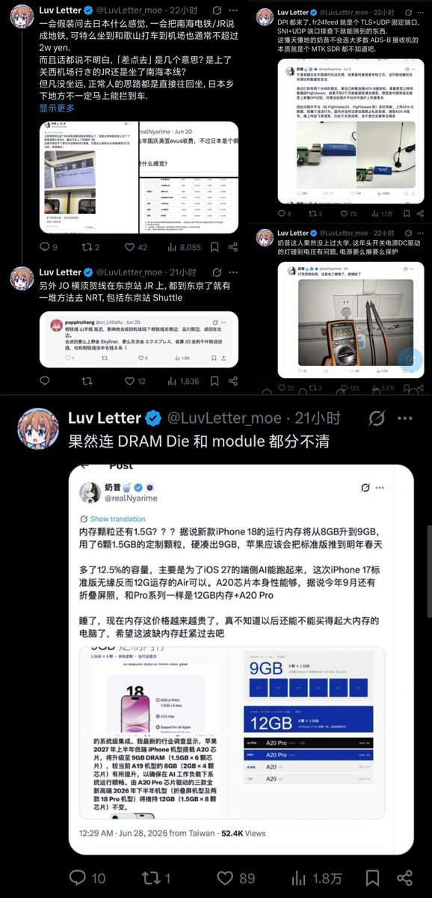
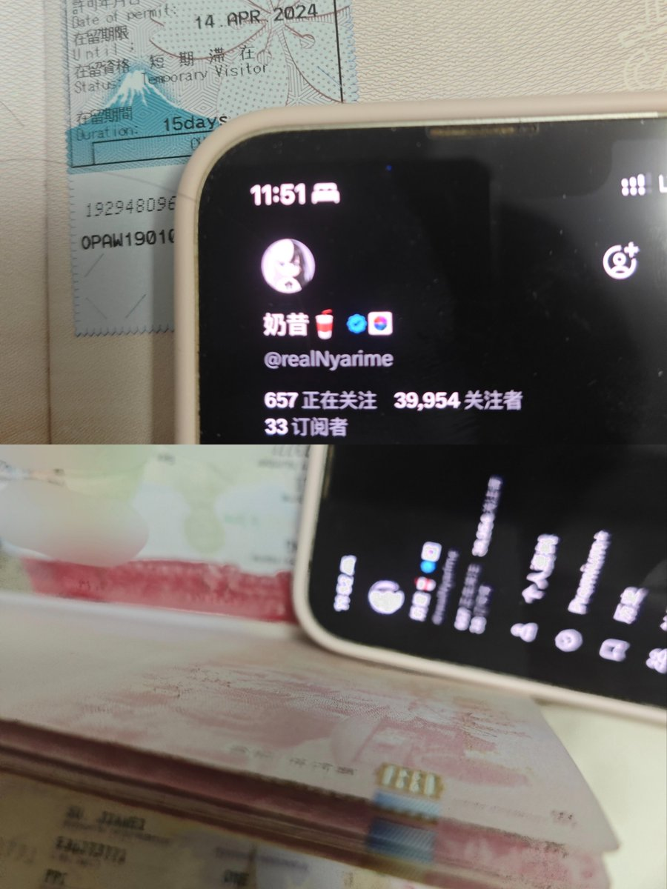
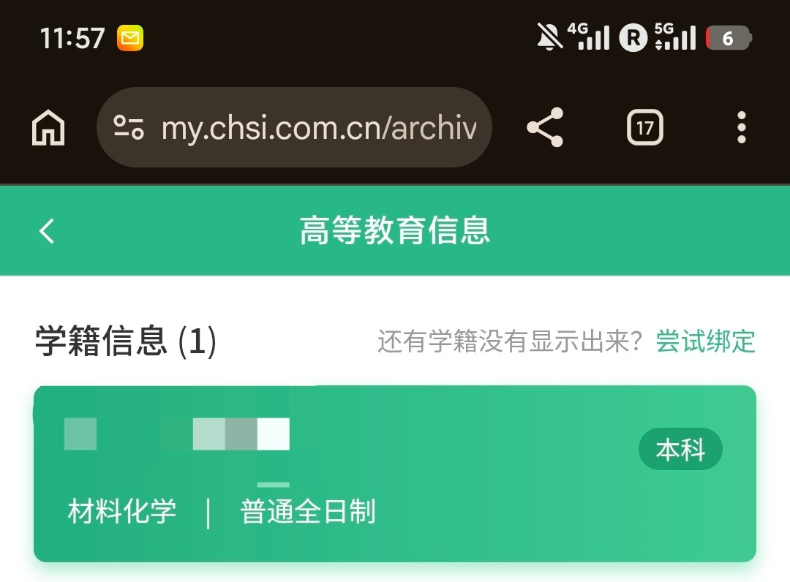

听朋友说有个叫 @LuvLetter_moe 的傻逼，追着我的推疯狂截图并连续咬了4口，我觉得我应该狡辩一下，以免造成不必要的误会
首先我事先声明，我与毛某已经4年没说过一句话了，他截图的“和歌山”是我在玩梗，也确实“假装”去日本了，实际上是在神户拦了个车到关西机场。其次我美签也是10年所以要EVUS，所以我去年10月才提醒快到期的推友赶紧去update一下，因为后面更新要收费了，纯属为了提醒有美签的推友们
最后就是，本人学习不是很好，这点我承认。就是因为物理不好才去学的化学，论强电可能没有您手接220V强，但论弱电你毛某算个鸡毛。我寻思撸大师你可真会慷他人之慨啊，就不照照镜子看看自己已经是果吹林檎的模样了！

首先我事先声明，我与毛某已经4年没说过一句话了，他截图的“和歌山”是我在玩梗，也确实“假装”去日本了，实际上是在神户拦了个车到关西机场。其次我美签也是10年所以要EVUS，所以我去年10月才提醒快到期的推友赶紧去update一下，因为后面更新要收费了，纯属为了提醒有美签的推友们
最后就是，本人学习不是很好，这点我承认。就是因为物理不好才去学的化学，论强电可能没有您手接220V强，但论弱电你毛某算个鸡毛。我寻思撸大师你可真会慷他人之慨啊，就不照照镜子看看自己已经是果吹林檎的模样了！



听朋友说有个叫 @LuvLetter_moe 的傻逼，追着我的推疯狂截图并连续咬了4口，我觉得我应该狡辩一下
首先我确实“假装”去日本了，我是在神户拦了个车到关西机场，其次我美签也是10年所以要EVUS，所以我去年10月才提醒快到期的推友赶紧去update一下，后面更新要收费了 https://t.co/i2rwltiX42
首先我确实“假装”去日本了，我是在神户拦了个车到关西机场，其次我美签也是10年所以要EVUS，所以我去年10月才提醒快到期的推友赶紧去update一下，后面更新要收费了 https://t.co/i2rwltiX42